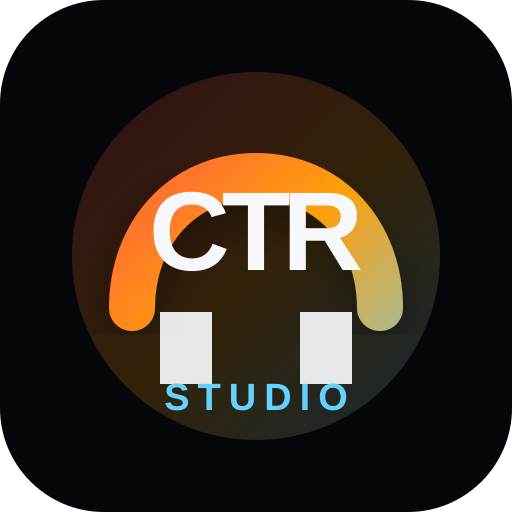

Build your library
Import audio once. Search, sort and keep it ready on your device.

CTR STUDIO OPEN Launch Studio ↗A free, local-first radio workspace that takes you from a quiet music folder to a complete live show—without uploading a single track. Run it in your browser, or get the desktop app for Mac, Windows and Linux and stream straight to your Icecast server.
Ground Xero
Local music
Open replaces scattered tools with three focused spaces that follow the way a real show comes together.
Import audio once. Search, sort and keep it ready on your device.
Put every track in show order and see the complete runtime.
Load both decks, open the microphone and control the transition.
Your imported tracks and metadata stay available between sessions.
Arrange music automatically with IDs, promos and sweepers at the spacing you choose.
Waveform previews, guarded transitions, Program output and one smooth crossfader.
Keep the signal moving when you need to step away from the desk.
Bring in your microphone and capture the complete master output on your device.
Add Open to your device and reopen the studio without a connection.
The desktop app streams your Program output to Icecast or SHOUTcast in MP3 or Opus, and comes back by itself if the connection drops.
Put what’s playing and an ON AIR bug on your video stream: add one browser source to OBS.
Three-band EQ on both decks, loops, and waveforms you click to jump through a track.
Map any controller with MIDI Learn: decks, crossfader, EQ, mic and Program, with lit buttons that follow the studio.
Ten seconds of dead air on Program sounds the alarm, and Auto DJ steps in to fill it.
Full-screen spectrum, wave and orbit visuals that move with your show.
CTR Studio Open stores your library, rundown and settings in your browser on your device. Your audio isn’t uploaded to us because it doesn’t need to be.
CTR Studio Open is open source under the Mozilla Public License 2.0. Read it, learn from it, report issues, or help make independent broadcasting better.
▾ src
▾ frontend
◇ studio.html OPEN LIVE DESK
JS ctr-studio-v2.js
# ctr-studio-v2.css
▸ backend
§ LICENSE MPL-2.0
→ CONTRIBUTING.md
Run the code, study it, build on it, and distribute compliant modifications.
Distributed changes to MPL-covered files remain available to the community.
The CTR Studio name and logos remain protected so users know what is official.
Free and open source · Best experienced in Chrome, Edge or Brave